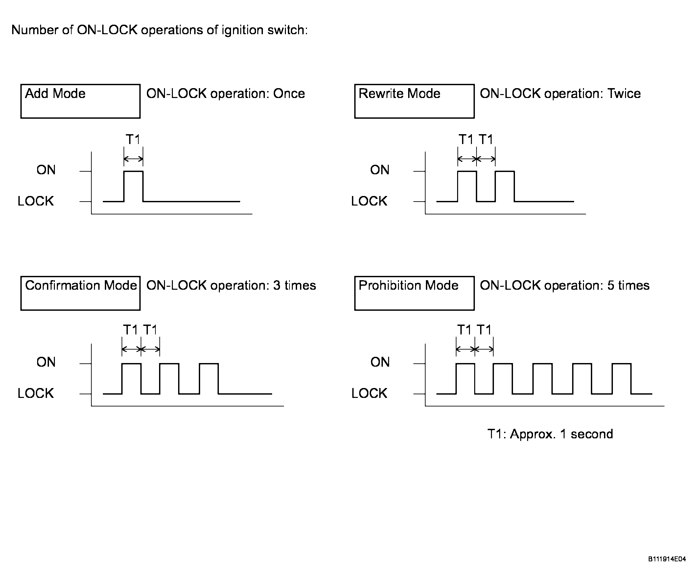
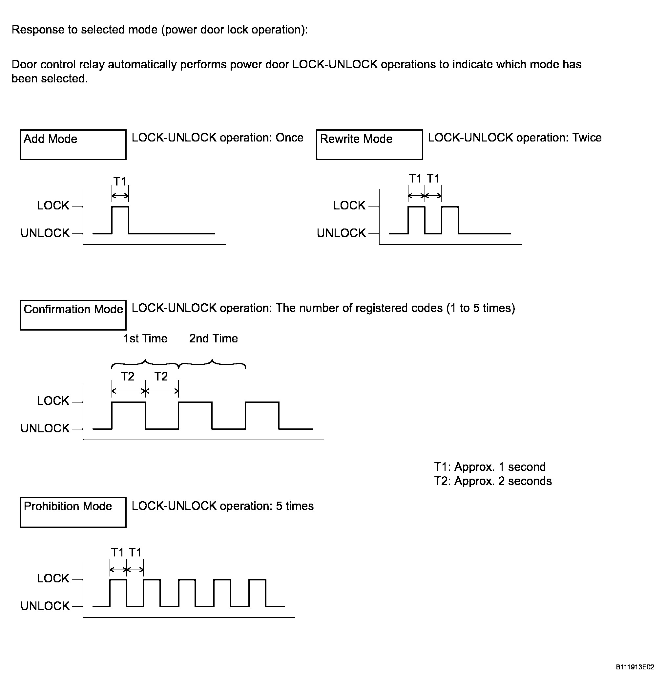

Wireless Door Lock Control System: Registration
HINT:
- Register the recognition code when replacing the door control transmitter or the door control receiver.
- Add mode is used to register new recognition codes while still retaining codes already registered. This mode is used when a new transmitter is added. If the number of registered codes exceeds 4, the previously registered codes will be erased, starting from the first registered code.
- Rewrite mode is used to erase all the previously registered recognition codes in order to register all new recognition codes. This mode is used when the transmitter or the door control receiver is replaced.
- Confirmation mode is used to confirm how many recognition codes have already been registered before another registration code is registered.
- Prohibition mode is used to erase all the registered codes and disables the wireless door lock function. This mode is used when the transmitter is lost.
- All the following registration procedures must be performed in order.
- REGISTER RECOGNITION CODE
- Procedure "A": Check that the following conditions are met.
- There is no key in ignition key cylinder.
- Driver side door is open (other doors are closed).
- Driver side door is unlocked.
- Procedure "B": Insert the key into the ignition key cylinder, then pull it out. Repeat twice within 5 seconds.
- Procedure "C": Perform the following operations within 40 seconds.
- Close and open the driver side door twice.
- Insert the key into the ignition key cylinder, then pull it out.
- Procedure "D": Perform the following operations within 40 seconds.
- Close and open the driver side door twice.
- Insert the key into the ignition key cylinder and close the driver side door.
- Procedure "E": Perform the following operations within 40 seconds.
- Turn ignition switch from LOCK to ON and back to LOCK at approximately 1 second intervals according to the number of times shown below.

Courtesy of © TOYOTA, LICENSE AGREEMENT TMS1002HINT:
If the number of ignition switch ON-LOCK operations is 0, 4, 6, or more than 6, there will be no response (power door lock and unlock operation) to show which mode has been selected.
Remove the key from the ignition key cylinder.
- Turn ignition switch from LOCK to ON and back to LOCK at approximately 1 second intervals according to the number of times shown below.
- Procedure "F": Check that the response to the selected mode occurs within 3 seconds.

Courtesy of © TOYOTA, LICENSE AGREEMENT TMS1002HINT:
- In confirmation mode, the LOCK-UNLOCK operation will occur once for each recognition code that has been registered. For example, if 2 recognition codes have been registered, the LOCK-UNLOCK operation will occur 2 times.
- In confirmation mode, if no recognition codes have been registered, the LOCK-UNLOCK operation will occur 5 times.
- If confirmation mode or prohibition mode is selected, the operation ends after the response to the selected mode completes.
- Procedure "G": Perform the following operations of completing the response to the Add or Rewrite mode.
- Press the LOCK and UNLOCK switches on the transmitter simultaneously.
- Within 3 seconds of the previous step, press the LOCK or UNLOCK switch.
- Procedure "H": After completing the above procedure, check that the response to the registration completion occurs within 3 seconds.
HINT:
- If the registration of the recognition code has failed, perform the registration procedures from the beginning.
- If registering another transmitter, return to Procedure "G" within 40 seconds of responding to the selected mode confirmation. All 4 recognition codes can be registered consecutively.
- Perform either of the following to complete registration of the recognition codes (add mode and rewrite mode).
- Open the door.
- Insert the key into the ignition key cylinder.
- Procedure "A": Check that the following conditions are met.